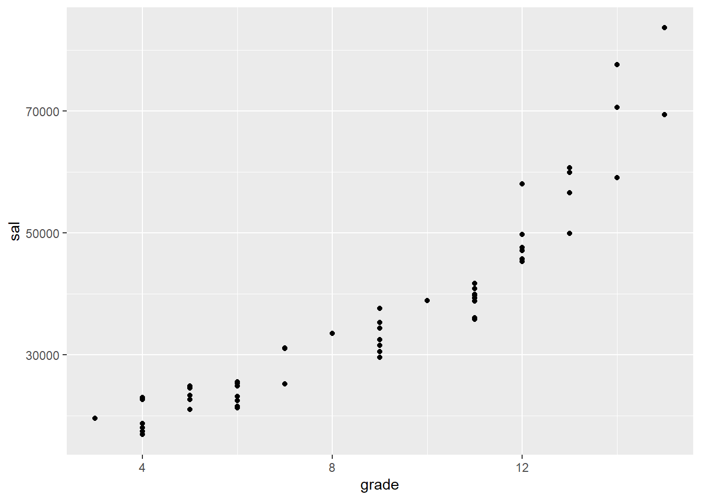

## BEFORE STARTING, TYPE YOUR NAME INTO THE FIELD "author" ABOVE AND REMOVE THIS COMMENT ##For those who prefer to work with RCloud, a project with the class materials can be accessed using the following link:
You can download this whole script as ComputerAssignment_04.Rmd file to save on your computer and open in RStudio instead of copying & pasting from this webpage:
Datasets for this assignment:
A random sample of 1,000 federal personnel records for March 1994:
Load Libraries:
library(dplyr)
library(ggplot2)
library(GGally)
library(knitr)
library(pander)Set your working directory, where the folder “Datasets” is located:
setwd(".") # for example: setwd("C:/Users/George/Dropbox/GSU/4041_Spring2020/R")Load the OPM94 data set from the file “Datasets/OPM94.RData” into R using load(file = "Datasets/OPM94.RData") command. Before you run the command, make sure you have set the working directory correctly (folder “Datasets” should be in your working directory).
load(file = "Datasets/OPM94.RData")Check the variable names:
names(opm94)## [1] "x" "sal" "grade" "patco" "major" "age"
## [7] "male" "vet" "handvet" "hand" "yos" "edyrs"
## [13] "promo" "exit" "supmgr" "race" "minority" "grade4"
## [19] "promo01" "supmgr01" "male01" "exit01" "vet01"summary(opm94$race) # see the levels of variable race## American Indian Asian Black Hispanic White
## 17 31 175 49 728summary(opm94$male) # see the levels of variable male## female male
## 488 512opm94AAM <- opm94 %>% dplyr::filter(race == "Black", male == "male") # create a subset of data wher race == "Black", male == "male"Create scatterplots with salary (sal) as the dependent variable and four independent variables: grade, yos, edyrs and age
ggplot(data=opm94AAM) + geom_point(mapping = aes(x=grade, y = sal))
# your work# your work# your workNow create a correlation matrix with the same five variables, plus two more: supmgr01, promo01
# cor(opm94AAM[, c("sal", "grade", "yos", "edyrs", "age", "supmgr01", "promo01")], use = "pairwise.complete.obs" ) %>% round(digits = 2)
opm94AAM %>% select(sal, grade, yos, edyrs, age, supmgr01, promo01) %>% cor(use = "pairwise.complete.obs") %>% round(digits = 2)## sal grade yos edyrs age supmgr01 promo01
## sal 1.00 0.92 0.31 0.52 0.31 0.43 0.10
## grade 0.92 1.00 0.22 0.47 0.19 0.39 0.07
## yos 0.31 0.22 1.00 0.10 0.61 0.30 -0.06
## edyrs 0.52 0.47 0.10 1.00 0.22 0.14 0.07
## age 0.31 0.19 0.61 0.22 1.00 0.27 -0.18
## supmgr01 0.43 0.39 0.30 0.14 0.27 1.00 -0.02
## promo01 0.10 0.07 -0.06 0.07 -0.18 -0.02 1.001. Write a couple of sentences about each graph. Talk about the strength and direction of each relationship. Does there seem to be any evidence of curvilinearity?
Your work...2. Rank-order the strength of the correlations between sal and each of the other variables. Do these seem in line with what you would have guessed based on the scatterplots? Explain briefly.
Your work...3. Talk about the direction of each of the correlations between sal and the other variables. Who tends to earn higher salaries, those with more or less education, higher or lower grades, etc.?
Your work...4. How do supervisors (supmgr=1) differ from other people (supmgr=0), based on the correlation coefficients? Do supervisors tend to have higher or lower salaries, higher or lower grades, etc.? Which variables is supervisory status most strongly related to?
Your work...5. How do people who were promoted between 1994 and 1995 (promo=1) differ from those who were not?
Your work...Save your RMarkdown file, Knit an html report, and publish to RPubs or save as a pdf file. Submit the link to the html or your pdf in the dropbox on iCollege.
Yuriy Davydenko © 2020